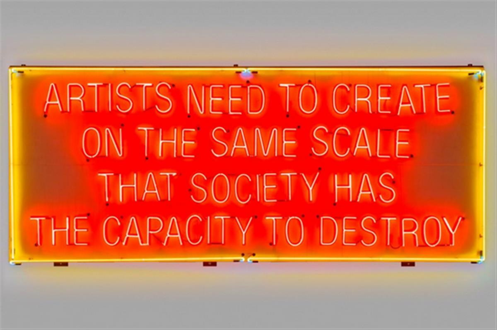
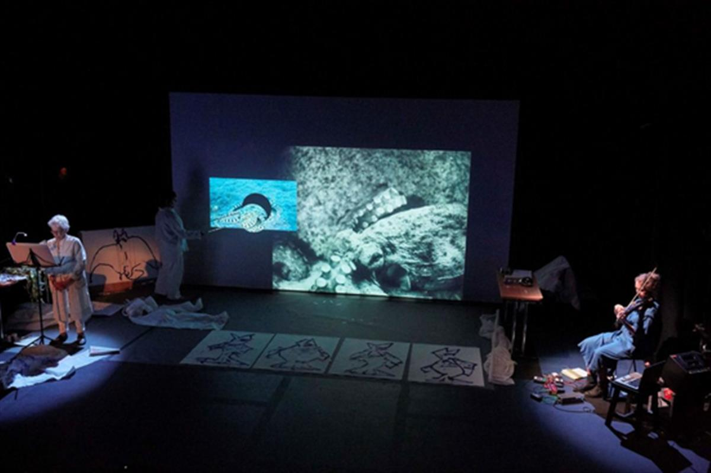
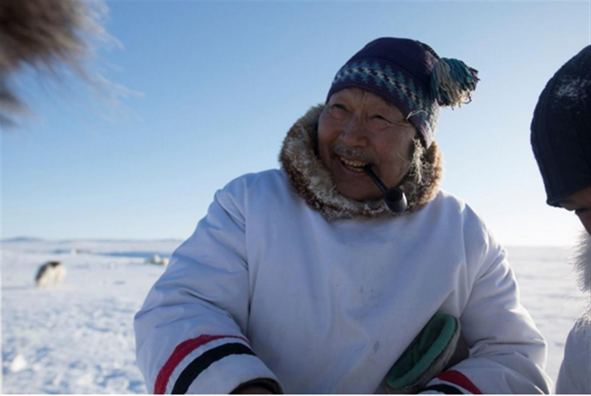
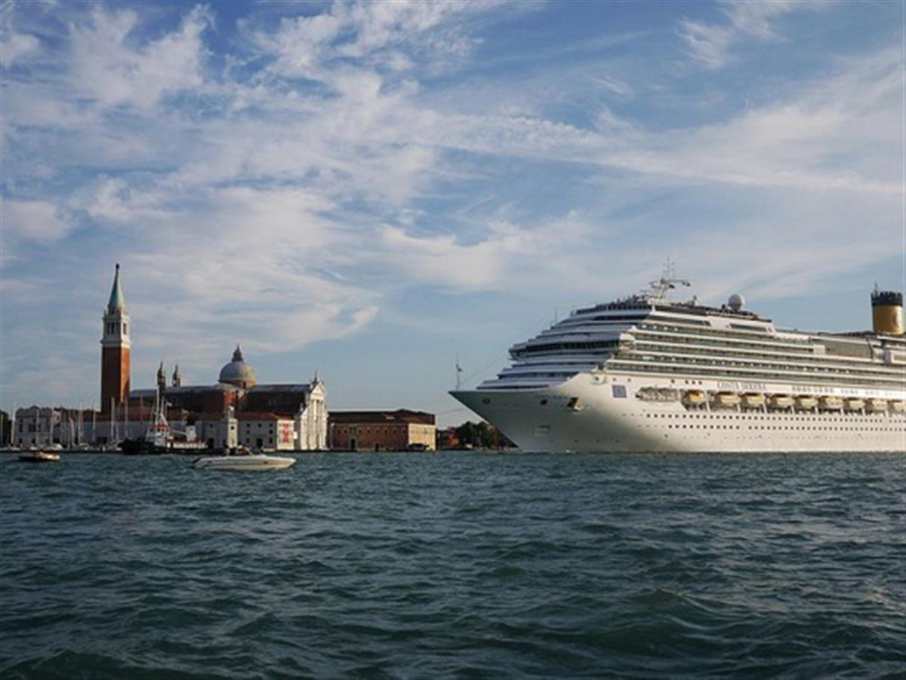

Swedish climate activist Greta Thunberg makes a speech in Rome in April 2019. Photo Antonio Masiello/Getty Images.
Swedish climate activist Greta Thunberg makes a speech in Rome in April 2019. Photo Antonio Masiello/Getty Images.
There’s a Flood of Climate Change-Related Art at the Venice Biennale. Can It Make a Difference—Or Is It Adding to the Problem?
Protesters from the activist group Extinction Rebellion were an unmissable sight in London last month. They stopped traffic and took over public spaces with eye-catching, performative demonstrations. The movement, which seeks to draw attention to governments’ “criminal inaction on the ecological crisis,” succeeded in making politicians take notice, thanks in no small part to its use of strong graphics, sound, performance, and humor—all tactics familiar to the contemporary art world.
This week, Venice welcomes a massed international assembly of individuals and entities one might assume shares Extinction Rebellion’s concerns (the art world, after all, is seldom shy of broadcasting its modish liberal credentials). So what of the spirit of Extinction Rebellion and other global climate change protest movements might we see at the 58th Venice Biennale, located in a city that is among the most vulnerable to rising tides?
The answer is quite a lot. But local climate advocates say the art world should be conscious about doing more good than harm.
Satellite Shows
Among the events addressing the issue in Venice is an exhibition organized by cultural journal The Brooklyn Railtitled “Artists Need to Create on the Same Scale that Society Has the Capacity to Destroy.” It is the second in a series of shows launched in 2017 as a response to President Trump’s “divisive agenda concerning our current social and political condition in regard to immigration, inequality, and the most urgent topic, climate change,” explains co-curator Phong Bui, as well as the administration’s withdrawn from the 2015 Paris Agreement.
Titled after a neon by artist and environmentalist Lauren Bon, the exhibition includes work by Kiki Smith, Shirin Neshat, Rirkrit Tiravanija, Tomas Vu and Sarah Sze, among others. Bui and his co-curator Francesca Pietropaolo see the show as a catalyst for discussion, which in turn will generate fodder for a new publication. Pietropaolo cites the teenage activist Greta Thunberg and School Strike 4 Climate Change as potent sources of inspiration: “The awareness of such urgency is palpable in today’s young generations,” she says.

Lauren Bon, Artists Need to Create on the Same Scale that Society Has the Capacity to Destroy (2006). Copyright the artist, courtesy of The Metabolic Studio, Los Angeles. Photograph by Joshua White.Bon’s own contribution to the exhibition started with an investigation of the Mediterranean region. “What I found was contemporary ecological peril,” she says. “Almost all the estuaries of rivers taken over by resorts, cruise ships dumping human waste, giant shipping burning cheap oil, oil digging, overfishing—the list goes on.”
Ubiquitous, too, were Mediterranean pine trees. As in her native California, they are being destroyed at an accelerated pace. “Great fires are beginning to be part of the story of the Mediterranean,” she says. Bon’s Inverted Pine was made in response: a sculpture painted in carbon harvested from a Mediterranean pine on a friend’s property devastated by fire. It’s personal for Bon. “The last big fire in California, the Woolsey Fire, came close to burning down my home and did burn down the home of many artists in my close community,” she says.
Beyond Virtue Signalling
During the opening week of the 2017 Venice Biennale, political philosopher and cultural critic Slavoj Žižek identified feel-bad art as an inevitable feature of big international exhibitions. He suggested this compulsive self-flagellation was a kind of virtue-signaling counterbalance to the art world’s increasing integration in the global capitalist system.
And indeed, not all art produced under the banner of climate change awareness does so either wholeheartedly or effectively: there is still an enormous amount of lip service, fluff, bandwagon-jumping and naiveté in the art world’s engagement with hot political issues of all kinds. But that is not the whole story, either. Art can, and does, have extraordinary impact.
“Experiences—not facts or data—are more likely to challenge and change our behavior,” says Markus Reymann, director and co-founder of Ocean Space, a new venue that fuses art and science, in Venice. “Hard facts are important but what matters most, in terms of effecting change, is what moves us on a personal level.”
Ocean Space, which opened with a Joan Jonas show in late March, is a new platform established by philanthropist Francesca Thyssen-Bornemisza’s TBA21 Academy, which conducts oceanic research and uses the arts as a route to ocean literacy, research, and advocacy. Reymann firmly believes artists’ historic role at the avant-garde of social change makes them a powerful force in the fight to develop deeper, longer lasting solutions than governments or industry have entertained.
“I believe that we need to imagine radically different ways of being on and with the planet—in our case with the ocean—and that is the space where I see our work situated,” he says.

Joan Jonas Moving Off the Land (2016/2017). Performance with María Huld Markan, Sequences art festival, Reykjavík, 2017. Courtesy of the artist and Gavin Brown’s Enterprise, NewYork/Rome. Photograph by Elísabet Davíðsdóttir.Climate Conscious Pavilions
The biennale’s very internationalism makes it an important forum to address issues of climate change: It is a space of geographically-specific testament. And a number of pavilions are tackling the cause this year. Part of the presentation by the Inuit-owned production collective Isuma, which is representing Canada, deals with “local concerns about the proposed expansion of mining activities just north of Igloolik,” explains co-founder Zacharias Kunuk. “Climate change is going to undoubtedly have a very profound impact on Inuit.”

Actor Apayata Kotierk (Noah Piugattuk) on the set of One Day in the Life of Noah Piugattuk (2019). Photographed by Levi Uttak. Copyright: Isuma Distribution International.Isuma’s work is made with an Inuit audience in mind: the biennale seems of refreshingly marginal concern. “As media artists, our delivery platform is very accessible so there is potential for a lot of people to see our work. We are releasing a number of our video pieces on iTunes in multiple languages, so anyone can watch them anywhere they are,” Kunuk says. “In general, art can provide a different perspective on issues that might reach people in new ways, and maybe shift their understanding of something.”
The subject of the Nordic Pavilion’s “Weather Report: Forecasting Future” is rather more explicit. “Every ecosystem needs its own unique solution, not to mention new modes of thinking that engender greater consciousness of the environment,” says co-curator Leevi Haapala. Works by Ane Graff, Ingela Ihrman, and artist collective nabbteeri will explore a variety of inter-species relationships, from the microbes in our bodies, to ocean algae, to overlooked creatures inhabiting the environment of the biennale itself. “All the works make visible the fragility of our ecosystems, while still bringing elements of hope for our goal to rebuild an ecologically sustainable future,” she says.
Meanwhile, Dane Mitchell’s project for New Zealand, ”Post Hoc,” will broadcast a devastatingly lengthy list of “vanished, withdrawn, obsolete, absent and extinct non-human species, entities, materials and things” from three cell-phone towers designed to resemble trees. The list is so long that the work will play eight hours a day for seven months without repeat. The issue is particularly pressing in Mitchell’s home, as well as other island nations.
Rather than climate change per se, Mitchell says he was “thinking about the unseen forces that have real bearing on our lives: I’ve been interested in activating the unseen in my work for some time, as I recognize it as having a political, philosophical, aesthetic and cultural weight. Phenomena such as the environment is a kind of ground zero of our experience of the unseen—it is how we encounter something colossally greater than us that reveals itself indirectly, through effect.”

The cruise ship Costa Serena sailing in front of San Giorgio Maggiore. Photo: Marie-Lan Nguyen, via Wikimedia Commons.How Green Is the Biennale?
As fragile ecosystems go, Venice is right up there: a delicate and miraculous balancing act between sea and land, human ingenuity and natural force. Jane Da Mosto, a scientist who is a member of the city environmental group We Are Here Venice, says that while the most destructive aspects of mass tourism—day trippers and cruise ships—are less associated with the biennale, exhibitors do not behave with sufficient responsibility. In previous years, caterers have used abundant plastic packaging and disposable bottles have been relied on for drinking water. Visitors to the opening week zip around in water taxis that release toxic fumes.
Da Mosto says that none of the participants in this year’s biennale have consulted We Are Here Venice about minimizing their impact on the city when transporting and installing exhibitions. “I wish that’s what they would contact us about,” she says. “Instead, we have been inundated with requests to speak on panels, contribute material, and provide symbolic partnerships to give a semblance of significance to numerous exhibitions ostensibly dealing with the climate crisis and environmental issues.”
Julie’s Bicycle—the London-based arts sustainability charity that recently helped responsibly bring Olafur Eliasson’s Ice Watch to Paris and London—also confirmed they had not been approached by any exhibitors participating in this year’s event.
Extinction Rebellion demonstrated the power of creative protest to influence political dialogue and public opinion: That energy has been picked up by many artists participating in the 58th Venice Biennale. Those installing and administering exhibitions installed in this fragile lagoon city urgently need to match the call to sustainability in their own practice. In the words of Greta Thunberg: “I want you to behave like our house is on fire. Because it is.”